Dieciséis direcciones, un solo símbolo
La misma idea — el león, la leona, la fuerza — pensada de dieciséis maneras distintas. Toca cualquier estilo para encontrar el punto de partida de tu diseño.
En pantalla: 0 diseños ·

Los diseños de esta galería son originales, creados para esta guía como referencia de estilo. Tu tatuador hará la versión final pensada para tu piel y tu medida.
Míralo en tu piel antes de decidir
Ya funciona. Sube una foto de tu pierna, coloca el diseño donde quieras y deja que la IA lo convierta en un tatuaje de verdad —luz, curvatura y escala reales— en un par de minutos. La galería de las dieciséis piezas y la guía completa siguen justo arriba, para cuando quieras volver.
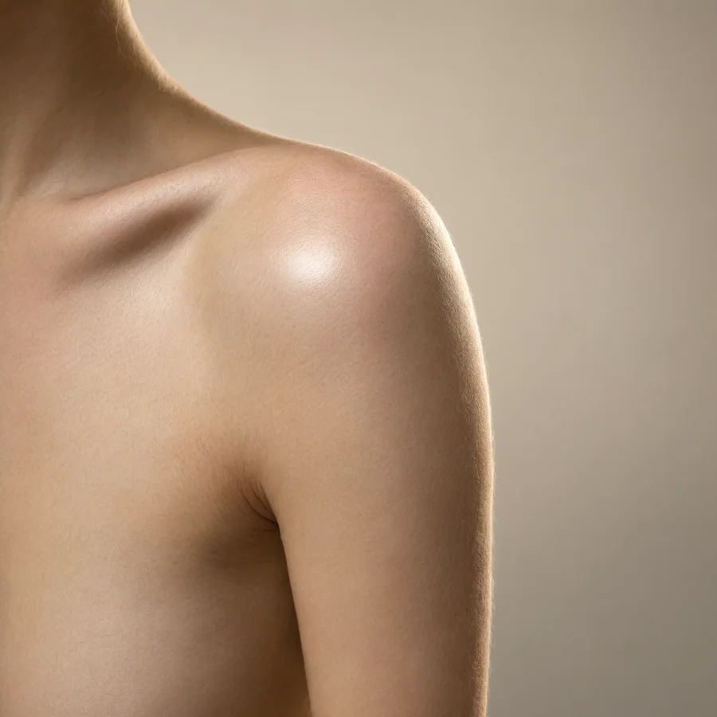
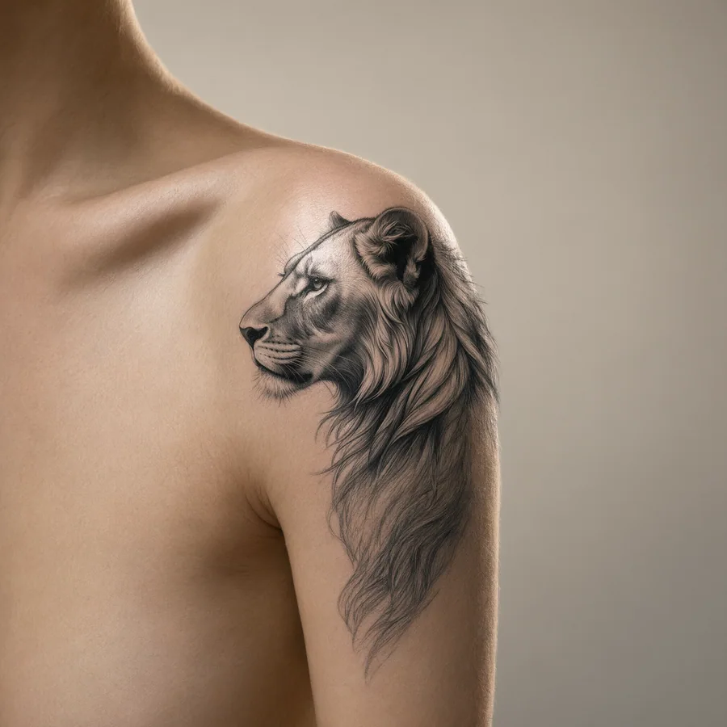
Sube tu foto de la pierna
De frente o de perfil, con luz natural. Nada más: sin medidas y sin registros.
Elige tu diseño
Puedes partir de un diseño de la galería o de una idea tuya.
A escala real, con luz de todos los días
Posición, tamaño y encaje: compruébalo todo sobre tu piel.
Por qué un tatuaje de león en la pierna, y no otro motivo
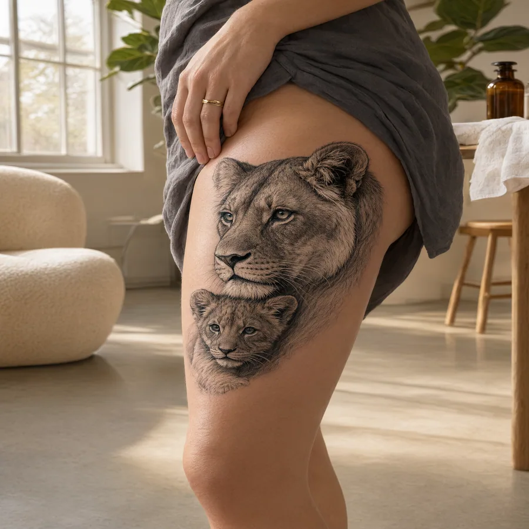
El león viene cargado de significado antes de que nadie lo dibuje: fuerza, liderazgo, protección de los tuyos. La leona añade otra capa — la que caza en equipo, la que cría, la que no necesita rugir para imponerse. Por eso el par leona con cachorros se ha vuelto uno de los diseños favoritos entre mujeres: es fuerza sin ruido, y muchas madres lo eligen como declaración de lo que protegen. La leona tiene guía propia: Tatuaje de leona en la pierna.
En una mujer, ese símbolo funciona mejor cuando el cuerpo forma parte del diseño. Y ahí la pierna tiene una ventaja concreta sobre otros sitios: la curvatura. Un león puede seguir el músculo del muslo, girar sobre la pantorrilla o subir desde el tobillo, en lugar de quedarse quieto como un cuadro. El movimiento de la pierna cambia el tatuaje cada vez que caminas.
También está la parte práctica, la que nadie pone en un moodboard: el muslo es un lienzo grande, de piel relativamente plana, y puedes decidir quién lo ve. Pantalón largo para la oficina, falda en verano. Pocos sitios del cuerpo te dan ese control.
Estilos de tatuaje de león en la pierna que envejecen bien
No todos los estilos cruzan igual los años. Sobre piel de pierna —que se estira, toma sol y roza— estas son las familias que mejor se comportan:
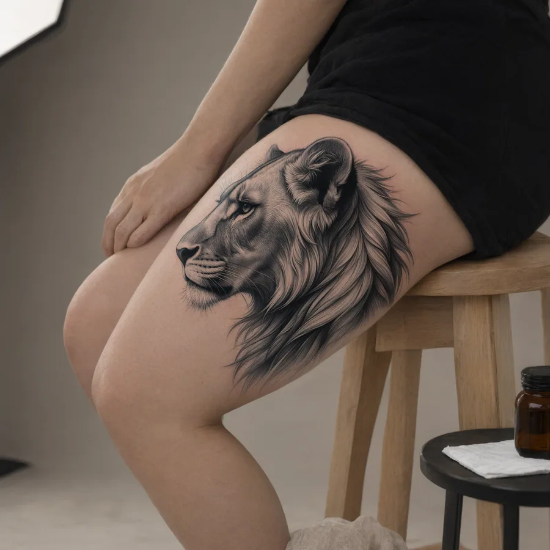
Realismo
El retrato en gris escala al detalle de la melena y la mirada. Necesita centímetros: por debajo de 15 cm, los rasgos se emborronan con los años. Ideal en muslo exterior.
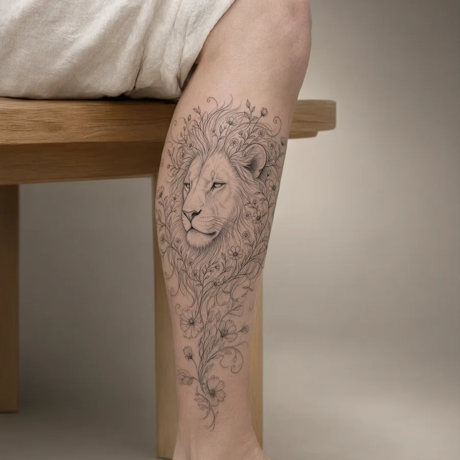
Fine line
Trazos finos y delicados, perfectos para composiciones que siguen la curva. Ojo con las líneas demasiado finas: un buen artista equilibra grosor para que el tiempo no las junte.
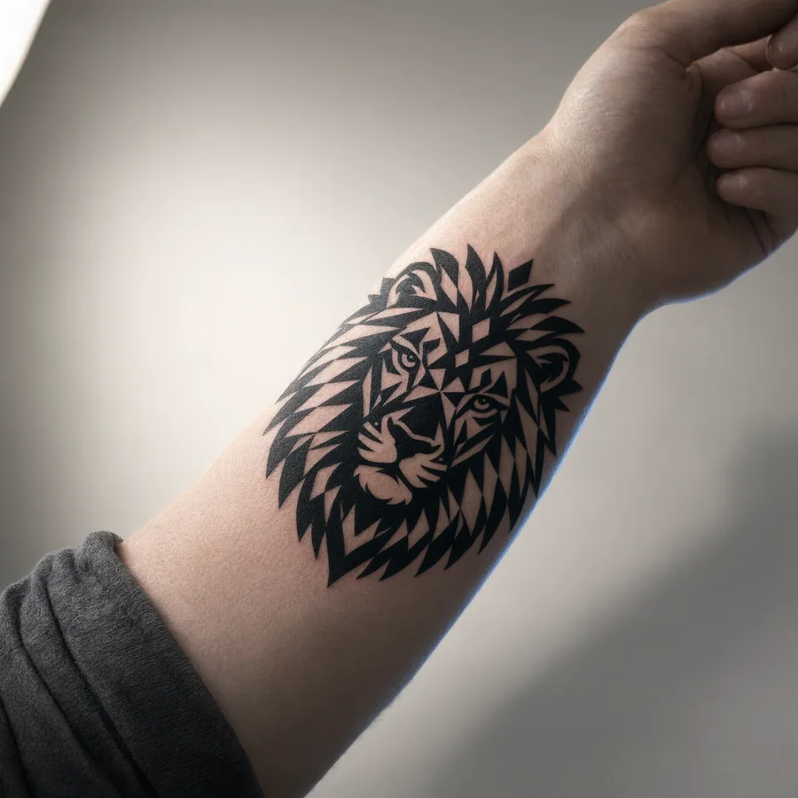
Blackwork
Masa negra y geometría. Es el estilo que menos sufre: contraste duro, lectura clara a cualquier distancia. Brutal y elegante a la vez en pantorrilla.
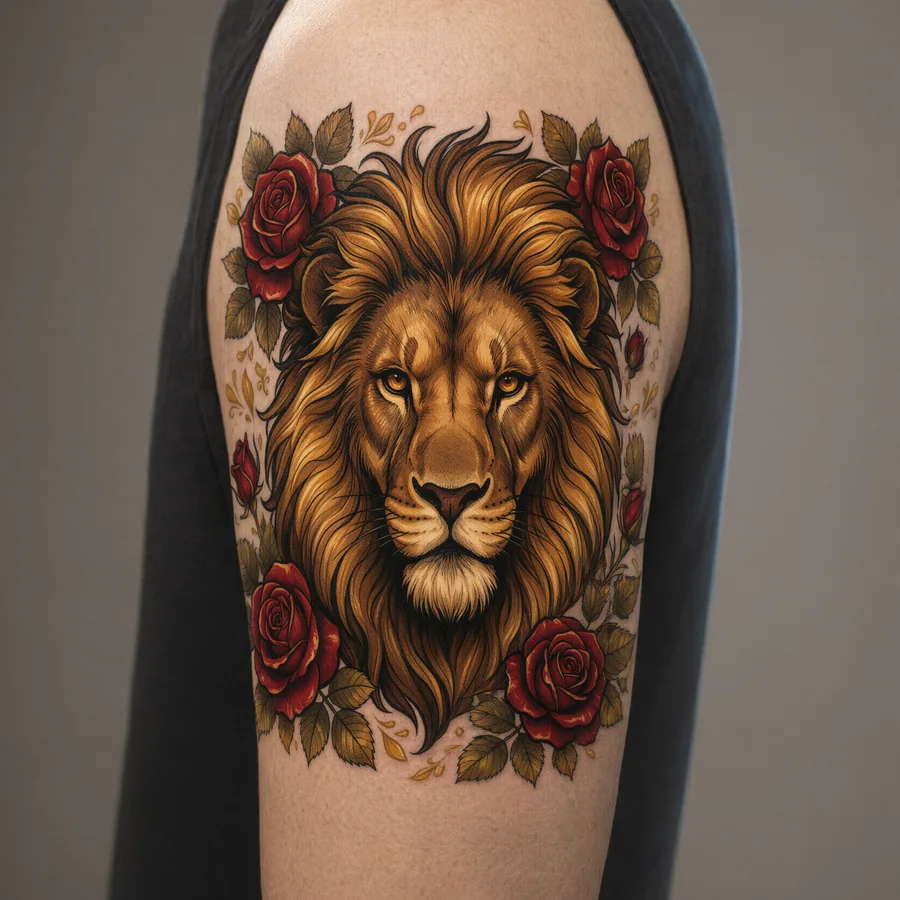
Neotradicional
Contornos firmes, colores cálidos, flores y fauna. Envejece bien porque no depende del detalle mínimo, sino de la composición. El favorito de quien quiere color con lectura clara.
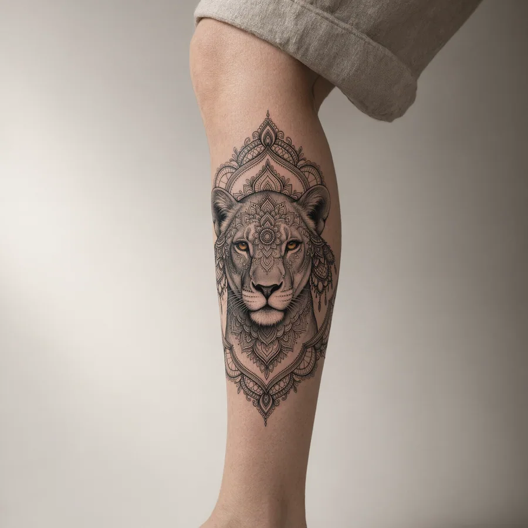
Ornamental
Mandalas, encaje, joyería dibujada. En un muslo delicado se lee casi como una liga: sigue la línea natural de la pierna y adorna sin narrar. Muy pedido entre mujeres.
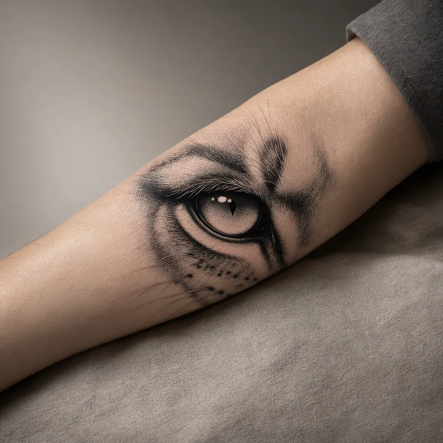
Dotwork
El degradado se construye punto a punto. Paciencia en la sesión, resultado suave y textil: desde lejos, piel; de cerca, universo.
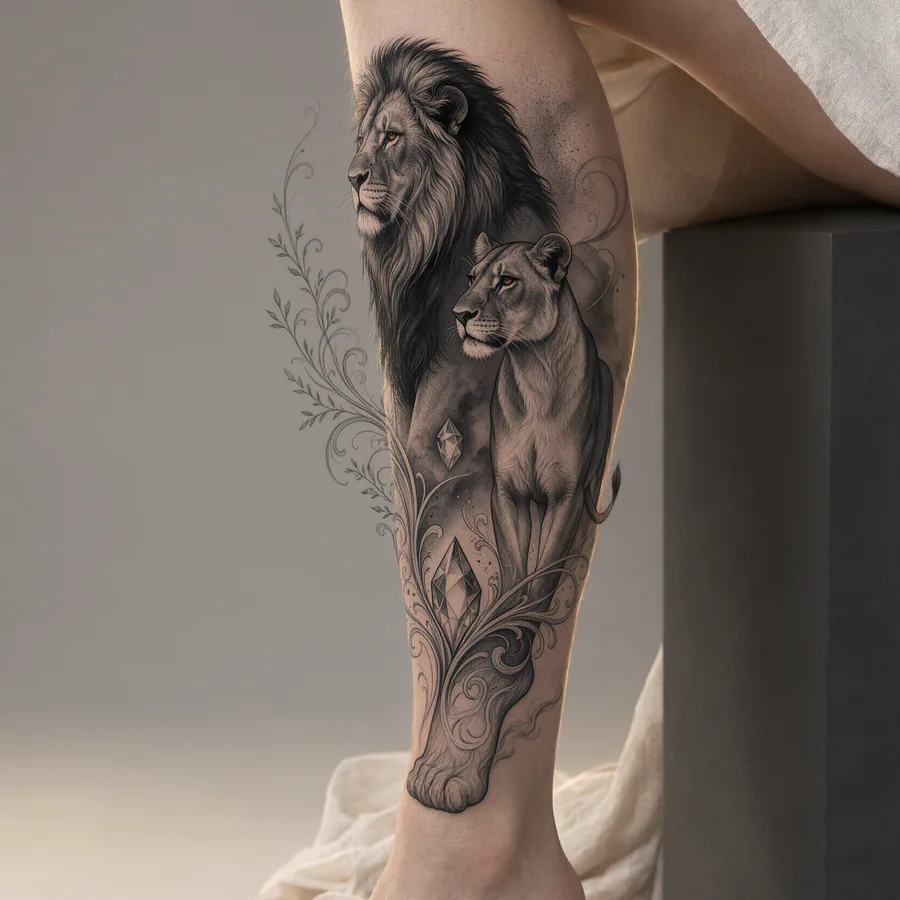
Composiciones grandes
La pierna completa como lienzo — rodilla a tobillo. Es un proyecto de varias sesiones; cuando se planifica entero, es el diseño que más luces gana con el movimiento.
Dos avisos honestos: el micro-realismo sin contraste envejece mal, y la acuarela pide retoques cada pocos años porque los pigmentos suaves pierden fuerza al sol. No son razones para descartarlos — son razones para saber lo que firmas.
Dolor, precio y curación del tatuaje de león en la pierna
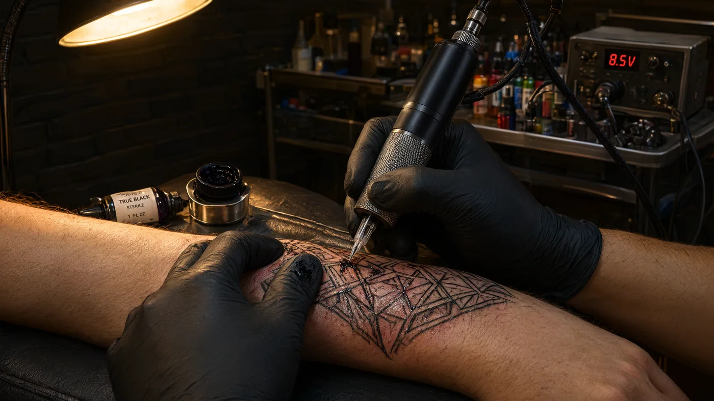
Dolor por zona
El muslo exterior y la parte carnosa de la pantorrilla son de los puntos más tolerables del cuerpo: mucha masa muscular y nervios tranquilos. El muslo interior, la espinilla y el tobillo suben la nota. Si es tu primera pieza grande, empieza por el exterior.
Precio
Depende de ciudad, tamaño y artista — y se cobra por sesiones. Como referencia latinoamericana, una pieza de león de 15 a 25 cm suele cotizarse desde unos 100 hasta 500 dólares o más. Pide tarifa por sesión y un estimado de horas antes de agendar.
Curación
La capa superficial de la piel cierra en 2 a 4 semanas; el asentamiento completo del color toma meses. Jabón neutro, crema sin perfume, nada de piscina ni mar las primeras dos semanas, y protector solar para toda la vida — la pierna queda al sol más que ninguna otra zona.
Primera sesión
Come bien antes, hidrata la piel en los días previos, lleva ropa cómoda que deje trabajar la zona (shorts amplios o falda larga; para muslo alto, piensa en acceso sin incomodidad). Nada de alcohol las 24 horas anteriores.
Cómo elegir tu tatuaje de león en la pierna, paso a paso
Reúne referencias reales.
Pinterest ayuda a encontrar el ángulo; el portafolio de artistas de tu ciudad te dice qué se sostiene sobre la piel. Busca piezas con meses encima —curadas—, no las recién salidas de la sesión.
Decide el mensaje antes de la forma.
¿Protección familiar? ¿Fuerza propia? ¿Un león solitario o la manada? La respuesta cambia la composición: retrato, cuerpo completo, leona con crías, o solo la mirada.
Elige la zona según el tamaño real.
Piezas de detalle: muslo exterior o pantorrilla. Piezas íntimas o pequeñas: tobillo o tramo alto del muslo, más fáciles de cubrir con ropa.
Llega a la cita con una idea clara, no con diez.
Un buen artista interpreta; diez referencias distintas lo confunden. Lleva dos o tres que compartan dirección y una frase que explique qué te importa.
Pide ver el diseño puesto, antes de la aguja.
Todo tatuador serio aplica un stencil temporal y lo posiciona contigo — ese es el momento de ajustar tamaño y ángulo. Míralo, gíralo, respira.
Y si aún dudas: pruébatelo sin tinta.
Es exactamente el problema que estamos resolviendo con nuestro probador: tu diseño sobre una foto real de tu pierna, con luz y proporción de verdad, antes de comprometer nada.
Preguntas frecuentes sobre el tatuaje de león en la pierna para mujer
¿Qué significa un tatuaje de león en la pierna para una mujer?
Los significados clásicos son fuerza, liderazgo y protección. En la leona se añade el matiz maternal: cuidado, crianza y la idea de no necesitar ruido para imponerse. Es tu diseño, así que el significado final lo pones tú — pero estos son los que más se repiten entre las mujeres que lo eligen.
¿Duele más en el muslo o en la pantorrilla?
En general duele menos en el muslo exterior y la parte carnosa de la pantorrilla, porque hay músculo que amortigua. Sube la intensidad en el muslo interior, la espinilla y el tobillo, donde el hueso y la piel fina están a flor. Para una primera pieza grande, el exterior del muslo es el punto más amable.
¿Cuánto cuesta un tatuaje de león en la pierna?
Depende de la ciudad, el tamaño y la reputación del artista, y se cotiza por horas de sesión. Como referencia latinoamericana, una pieza de 15 a 25 cm suele arrancar alrededor de 100 dólares y superar los 500 en trabajos de detalle o artistas muy demandados. Siempre pregunta tarifa por sesión y cuántas sesiones estima antes de agendar.
¿Puedo ocultar un tatuaje en la pierna?
Sí — es una de las grandes ventajas de la zona. El muslo queda cubierto con pantalón largo o falda midi; se muestra solo cuando tú lo decides. El tobillo y la pantorrilla son más visibles con ropa de verano. Si la discreción importa en tu trabajo, apunta al tramo alto del muslo.
¿Cómo envejece un tatuaje de león?
Depende del estilo y del cuidado. Contornos firmes y buen contraste (blackwork, neotradicional, realismo de buen tamaño) aguantan décadas con retoques puntuales. Lo que envejece mal: líneas demasiado finas, micro-detalle sin contraste y colores suaves expuestos al sol sin protección. La pierna en verano pide protector solar casi a diario.
¿Mejor leona con cachorros o león solitario?
Es una pregunta de mensaje, no de moda. La leona con cachorros habla de familia, cuidado y protección de los tuyos — es la versión más elegida por madres. El león solitario lee como fuerza personal, independencia y liderazgo. Los dos funcionan en muslo y pantorrilla; elige el que te describa, no el que más veas en redes. Y si el diseño crece a pareja o familia entera, las composiciones están en Tatuajes de leones en la pierna.
¿Puedo ver cómo me queda antes de tatuarme?
Ya está disponible: sube una foto de tu pierna al probador, coloca el diseño y mira luz, curvatura y tamaño reales antes de decidir. Crear la cuenta es gratis y puedes hacer tu primera prueba sin pagar. Y antes del sí definitivo, mantén la regla de oro: pide el stencil de prueba en el estudio y míralo de pie, sentada y en movimiento.
¿Cuánto tarda en curar?
La piel superficial cierra entre 2 y 4 semanas; el color se asienta por completo en unos meses. Las primeras dos semanas son las críticas: limpieza suave, crema sin perfume, nada de piscina ni mar, y nada de rascarse cuando empiece a picar. Después, protector solar para siempre.
¿Qué tatuajes de león son apropiados para una mujer?
Los que te representen, para empezar — pero hay tres familias que se repiten: el retrato realista en blanco y negro (en muslo, 15 cm o más), la línea fina con flores (más delicada, funciona en muslo alto o tobillo) y las composiciones de leona con cachorros (mensaje maternal). El estilo importa menos que el tamaño: a partir de 12–15 cm, cualquier diseño serio de león tiene espacio para vivir.
Tu león ya existe. Falta verlo en tu piel.
Explora la galería, elige tu dirección y llega a la cita con las cosas claras.


{kind=link}
{kind=link}
{kind=link}
{kind=link}
{kind=link}
{kind=link}
{kind=link}
{kind=link}
{kind=link}
{kind=link}
{kind=link}
{kind=link}
{kind=link}
{kind=link}
{kind=link}
{kind=link}